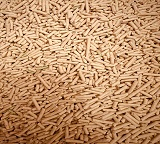
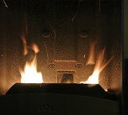

Servizio impianto biomassa
This Is Important
Duis neque nisi, dapibus sed mattis et quis, nibh. Sed et dapibus nisl amet mattis, sed a rutrum accumsan sed. Suspendisse eu.
Also Important
Duis neque nisi, dapibus sed mattis et quis, nibh. Sed et dapibus nisl amet mattis, sed a rutrum accumsan sed. Suspendisse eu.
Probably Important
Duis neque nisi, dapibus sed mattis et quis, nibh. Sed et dapibus nisl amet mattis, sed a rutrum accumsan sed. Suspendisse eu.
A gigantic heading you can use for whatever
With a much smaller subtitle hanging out just below it

il pellet
Il pellet è un combustibile ecologico ricavato da segatura pressata. Scalda in modo efficiente, riduce le emissioni di CO2 ed è economico, rinnovabile e facile da gestire in stufe moderne,ma efficente pure in stufe datate

le stufe
Le stufe riscaldano gli ambienti sfruttando diverse tecnologie. Oltre ai modelli a pellet e legna tradizionali, esistono stufe a gas, bioetanolo ed elettriche, ognuna con specifici vantaggi di efficienza e design.

quale stufa dovrei comprare?
La stufa a pellet è la migliore. Garantisce un'efficienza oltre il 90%, riduce le emissioni, ed è programmabile. Sfrutta un combustibile economico ed ecologico, riscaldando la casa in modo autonomo e uniforme.